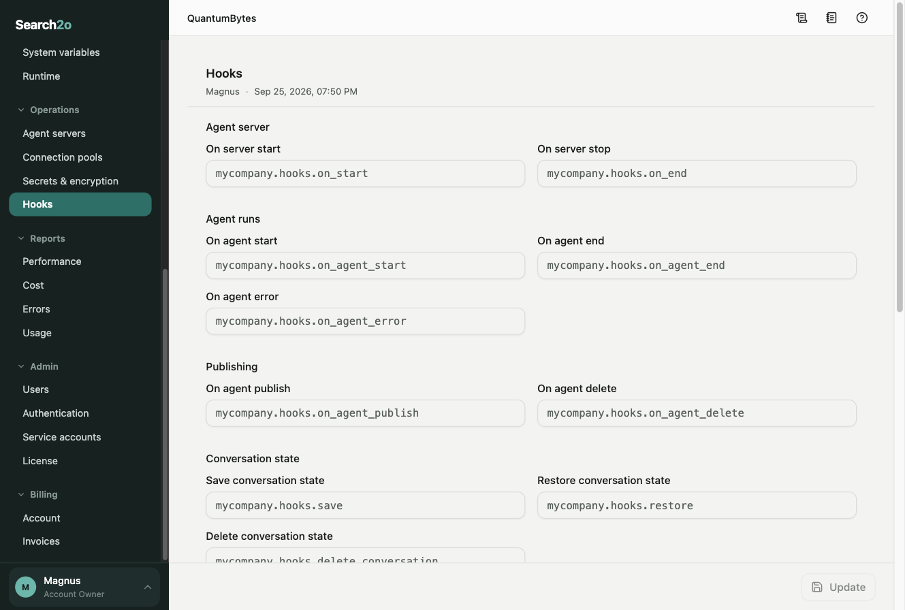
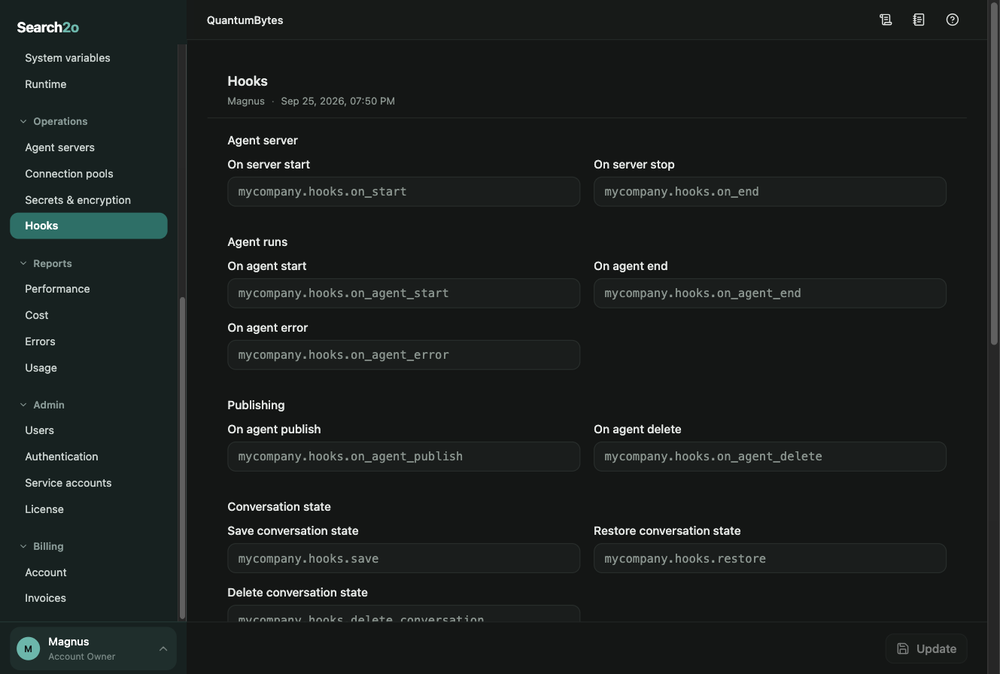

How hooks work
Hooks are Python functions and classes of your own that the agent server calls at set points: when the agent server starts and stops, before and after an agent runs, when an agent is published or deleted, before an LLM or API call, and when the agent server needs a secret, an encryption key, or the state of a conversation. Administrators name them on the Hooks page in the GUI, under Operations › Hooks.


How hooks are loaded
Each hook is a dotted Python import path, such as mycompany.hooks.on_agent_end, naming a function or class. The code must be installed in the Python environment of every agent server of the account. An empty box means the hook is not set.
Hooks are imported when the agent server starts, so a change on the Hooks page takes effect only after the agent servers restart. Every other configuration part reaches a running agent server before its next run; this one does not, and the page says so when it saves. A path that cannot be imported, a function that is not async, or an adapter class that cannot be built is written to the agent server's log, and that agent server refuses to run agents until the hook is fixed and the agent server restarted. A save is recorded in the audit log as “Hooks were updated”, with the names of the fields that changed.
Writing a hook
Every hook is an async function that takes one dict. The dict holds what is relevant to the call; the other pages of this section list its keys, hook by hook. Most calls include isValidation, which is True during a validation run. Only vault, encryptionKey and restore return a value; what the other hooks return is ignored.
To refuse, a hook raises an exception. The exception's message is shown as it is: to the user when an agent is stopped, to the developer when a save is refused. Choose the words accordingly.
async def before_api_call(args):
if args["method"] != "GET" and args["userEmail"].endswith("@contractor.example.com"):
raise Exception("Contractors may read from this API but not write to it.")
async def on_agent_end(args):
await audit.record(args["userEmail"], args["agentName"], args["agentVersion"],
args["resultCode"], validation=args["isValidation"])Settings
| Field | Type | Default | Description |
|---|---|---|---|
onStart | string | Called once when the agent server starts. If it raises, the server does not start. | |
onEnd | string | Called when the agent server shuts down normally. It is not called if the process is killed. If it raises, the message is logged. | |
onAgentStart | string | Called before a top-level agent runs, with isNewConversation and startFromAsk. It is not called for agents that another agent invokes. If it raises, the agent stops. | |
onAgentEnd | string | Called after a top-level agent finishes successfully or pauses to ask, with endWithAsk, before the run is recorded. It is not called for agents that another agent invokes. If it raises, the agent fails. | |
onAgentError | string | Called after a top-level agent fails, before the run is recorded. It is not called for agents that another agent invokes. If it raises, its message is reported as the error. | |
onAgentPublish | string | Called after an agent is published, with its name, version, definition, title, tag and the publisher's email. If it raises, the caller gets an error that says the agent was published. | |
onAgentDelete | string | Called after an agent is deleted, with its name. If it raises, the caller gets an error that says the agent was deleted. | |
save | string | Stores a conversation's state, given convid, state, userEmail and agentName. The state is not encrypted by this server, and ownership is not checked by Search2o Cloud. Validation runs keep their state in Search2o Cloud. Set together with restore and deleteConversation. | |
restore | string | Returns the state stored by save for a convid, or None when there is none. It also receives userEmail, so it can check who owns the conversation. Set together with save and deleteConversation. | |
deleteConversation | string | Deletes the state stored by save for a convid. Set together with save and restore. Expiring stored state is the customer's responsibility. | |
vault | string | Returns the value of a secret, given its name, for the vault secret source. | |
encryptionKey | string | Returns the encryption key as bytes, given keyName, for end-to-end encryption. | |
beforeLlmCall | string | Called with each request before it is sent to a language model. It cannot change the request. If it raises, the agent stops. | |
afterLlmCall | string | Called with each response from a language model. It cannot change the response. If it raises, the agent stops. | |
beforeApiCall | string | Called before an api command sends its request, with the method, URL, headers, query parameters, body and profile. If it raises, the request is not sent and the agent stops. | |
llmAdapters | list of string | LlmAdapter classes that add support for more language model vendors. Each must build with no arguments. | |
agentConfigValidators | object of "llm" | "api" | "mcp" | "db" | "prompt" → string | A function per agent configuration part that checks a profile before it is saved, given the profile. If it raises, the save is refused with its message. |